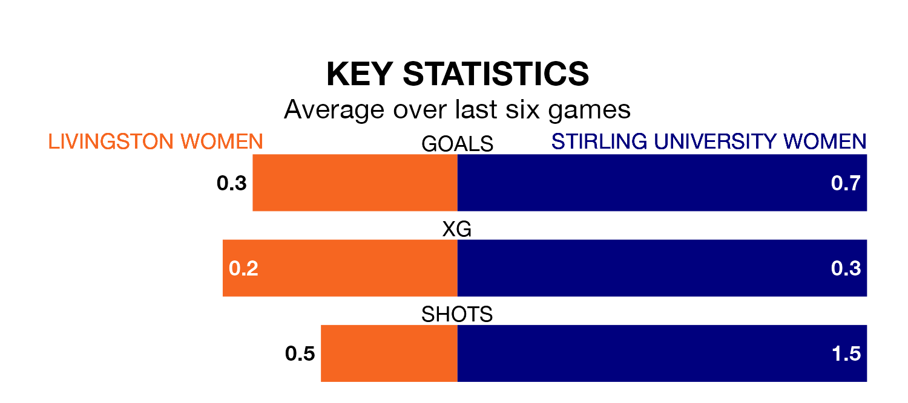

Struggling Stirling University Women face Livingston Women away at the Tony Macaroni Arena on Sunday looking to build on a win in their last league outing.
After securing all three points with a 2-0 victory over Boroughmuir Thistle on Wednesday, Stirling University sit bottom of SWPL 2.
They travel to play a Livingston side third in the standings, who lost in their last match, 4-0 against Queen's Park Women.
Livingston are in bad form in SWPL 2, with one win and a draw from their last six games.
And also with a win and a draw over that period, Stirling University's form is identical – they have both taken four points from 18.
With 16 goals in 20 games so far this season, the visitors are the league's lowest scorers with 0.8 goals per game. And they are conceding more than average, letting in 67 goals at a rate of 3.4 per game.
The home team are also below average scorers, with 1.6 goals per game, compared to a league average of 1.9. They have conceded 1.5 goals per game.
Over the last two years, Livingston and Stirling University have played each other twice. Livingston won both of them.
Their last meeting was on January 14, when Livingston won 3-1 away.
Updated: 15:10 (UTC), 15/03/24